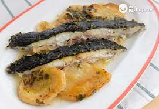

A delicious home made meal that everyones enjoys
This recipe is the favourite of the Craziest engineer of the trio.
This is a recipe especially prepared to use in a family gathering, it's easy to make and leaves everyone full.
Ingredients
- 1 turbot (Preferably above 1.5kg)
- 2 onions
- 2 potatoes
- 3 garlic tooths
- Both half a glass of wine and water
- Olive Oil and salt
Procedure
- Coat an oven tray in olive oil and brown sliced onions
- Add the potatoes and cook for 5-8min. Preheat the oven to 180º
- Crush the garlic in a mortar and pestle slowly adding the wine and a bit of olive Oil
- Place the turbot in the tray(make two cuts in the top of the trubot)
- Add both the mixture of the mortar and the water
- Cook for 25min
- SERVE AND ENJOY
Back to top
Back to main page